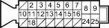

- Check the resistance between the appropriate wheel sensor (+) and ( - ) circuit terminals (see table).
| DTC | Appropriate Terminal | |
| (+) Side | (-) Side | |
| 11 (Right-front) | No. 18: FRW (+) | No. 2: FRW (+) |
| 13 (Left-front) | No. 3: FLW (+) | No. 12: FLW (+) |
| 15 (Right-rear) | No. 15: RRW (+) | No. 6: RRW (+) |
| 17 (Left-rear) | No. 5: RLW (+) | No. 14: RLW (+) |
ABS CONTROL UNIT 25P CONNECTOR

Wire side of female terminals
Is the resistance between 450 - 2,000 ohms?
YES - Check for loose terminals in the ABS control unit 25P connector. If necessary, substitute a known-good ABS modulator-control unit and recheck. 
NO - Go to step 8.
- Disconnect the harness 2P connector from the appropriate wheel sensor, and check the resistance between the (+) and ( - ) terminals of the wheel sensor.
Is the resistance between 450 - 2,000 ohms?
YES - Repair open in the (+) or ( - ) circuit wire, or short between the (+) circuit wire and the ( - ) circuit wire between the ABS control unit and the wheel sensor.
NO - Replace the wheel sensor.
NOTE: If the ABS indicator comes on because of electrical noise, the indicator goes off when you test-drive the vehicle at 19 mph (30 km/h).
- Visually check for appropriate wheel sensor and pulsar installation (see table). Measure pulsar-to-sensor clearance. Inspect the pulsars for damage (see page 19-118).
DTC Appropriate Terminal 12 Right-front 14 Left-front 16 Right-rear 18 Left-rear
Are the wheel sensors and pulsars OK?
YES - Go to step 2.
NO - Reinstall or replace the appropriate wheel sensor or pulsar.
- Disconnect the ABS control unit 25P connector.
- Measure the resistance between the appropriate wheel sensor (+) and ( - ) circuit terminals (see table).
DTC Appropriate Terminal (+) Side (-) Side 12 (Right-front) No. 18: FRW (+) No. 2: FRW (+) 14 (Left-front) No. 3: FLW (+) No. 12: FLW (+) 16 (Right-rear) No. 15: RRW (+) No. 6: RRW (+) 18 (Left-rear) No. 5: RLW (+) No. 14: RLW (+)
ABS CONTROL UNIT 25P CONNECTOR

Wire side of female terminals
Is there less than 450 ohms?
YES - Repair short to wire between the appropriate wheel sensor (+) and ( - ) circuits.
NO - Go to step 4.